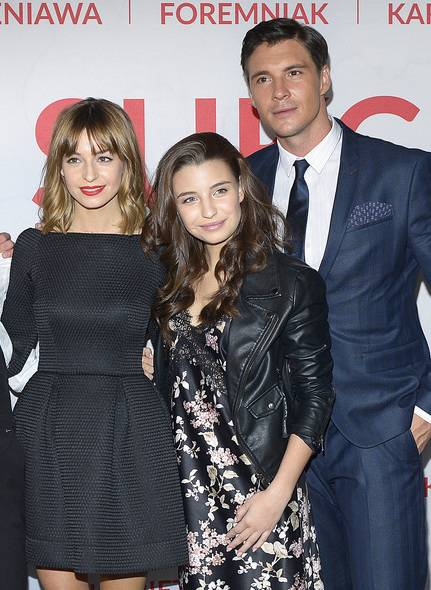

Monika Leszczyńska - strona domowa - monolog :)
Kim jestem?
Cześć! Na co dzień jestem mamą dwójki wspaniałych dzieci i żoną równie wspaniałego męża, ale w przyszłym roku mam nadzieję, że zmienię swój etat „gospodyni domowej” na zupełnie inny, ale wiadomo, mamą jest się 24/7 ;) W wolnych chwilach lubię montować filmiki, troszkę szperać w Photoshopie i wylewać siódme poty na zajęciach zumby :) Zapraszam Cię do spędzenia krótszej lub dłuższej chwili na mojej stronie :)
Przejdź do Pamiętniczka
Pamiętniczek
Czy nie tęsknię za pracą i stylem życia zanim przyszły dzieci na świat?
Zazwyczaj nie, bo bardzo lubię przebywać z dziećmi w domu, szaleć z nimi na dywanie, obserwować, jak uczą się nowych rzeczy, słów, ale już powoli one robią się starsze, a ja czuję, że czas coś zrobić ze sobą, w sensie kariery, bo po 4-ro letniej przerwie zawodowej chyba rzadko komu udaje się wrócić na byłe stanowisko pracy, stąd pomysł na inną branżę, bo kiedy jak nie teraz? :)
Przejdź do artykułu o pisaniu HTML-a
Jakie są moje plany na najbliższą przyszłość?
Cel mam jasno określony, czy to w styczniu, czy w grudniu roku 2020 zostanę Junior Frontend Developerem. Systematyczność w nauce oraz grzeczne, zdrowe dzieci – to złoty środek na osiągnięcie tego celu hehe.
Skąd w ogóle pomysł na zmianę zawodu?
Księgowość i programowanie wbrew pozorom mają wiele wspólnego, w obu zawodach trzeba być bardzo skrupulatnym i szczegółowym, spędzać masę czasu przed komputerem, w efekcie widzimy dobrze funkcjonującą firmę, niemającą problemów ze skarbówką oraz świetnie działającą stronę internetową, z tą różnicą, że w kolejnych miesiącach księguję tę samą firmę, a we frontendzie mogę mięć co raz mnóstwo nowych kolorowych projektów i to chyba przeważyło na zmianę mojej decyzji co do ścieżki kariery. Nie ukrywam też, że mój mąż, Łuakasz, troszkę dołożył cegiełkę, gdyż sam jest programistą, ale w backendzie
Skąd czerpię motywację do nauki?
Światełko w tunelu zobaczyłam dla siebie, jak trafiłam na bloga bedeprogramistka.pl Natalii Sokołowskiej, która to po 30-tce z dwójką dzieci postanowiła, że zmieni zawód na programistkę w w ciągu półtora roku zrobiła to! Można? Można! Kolejną motywacją są wpisy na bloku tym razem mojej dobrej koleżanki z podstawówki, Magdy Więckowskiej, Magda Pisze, pisze wiele postów motywacyjnych i też zawsze chciała prowadzić takiego bloga, w końcu się za to zabrała i już pa około 2 tys obserwujących, dlatego zrozumiałam, ze i ja jeśli się za to poważnie zabiorę, to małymi kroczkami dojdę do celu!
A co w przypadku kryzysu w nauce?
Takowy już nastąpił, myślałam,że tu jest taki ogrom wiedzy, a ile jeszcze przede mną, że chyba to nie na moją głowę i lepiej przypomnę podatki i nadal będę księgować, ale wyobraziłam siebie jako kobietę sukcesu z włąsną działalnością za max 2 lata i wróciłam do działania :D
Czy nie kuleje zatem życie prywatne, czas na odpoczynek?
Moje życie mogę teraz podzielić na dwie sfery: kiedy dzieci śpią/są w placówkach i kiedy szaleją w domu haha. Nauka zostaje mi tylko na wieczór, od 21.00 ile dam radę, ale staram się obejrzeć 1 film z mężem w tygodniu, pogadać o byle czym, a nie o obowiązkach...Ogólenie nie jest źle :)